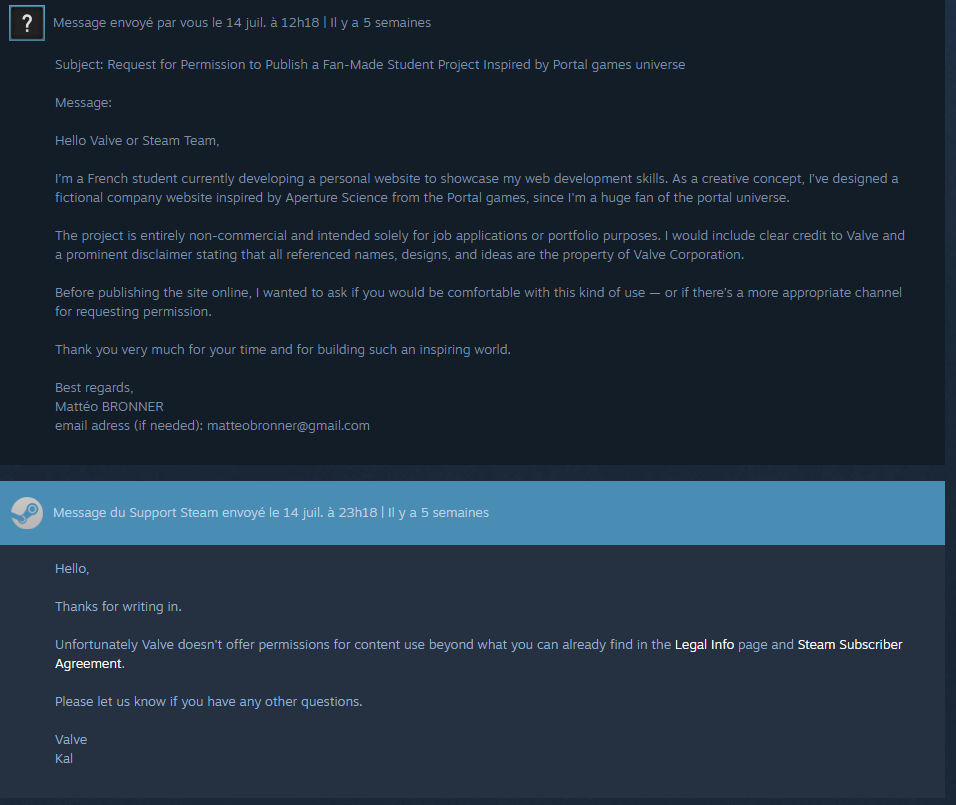

This is a student-made fan project inspired by Portal (Valve Corporation). Portal, Aperture Science, and related elements are trademarks of Valve. Visit Valve at valvesoftware.com or follow @valvesoftware on X/Twitter. This site is not affiliated with or endorsed by Valve.
I'm a huge fan of the Portal universe and the strange stories told in Portal and Portal 2 by Valve.
Since I am studying computer science (more specifically software and mobile application development) at the French university "Marie et Louis Pasteur" in Belfort,
I designed this website both as a tribute to my favorite universe and as a portfolio I can present to professionals.
You can see this website as a mix of all my passions: programming, science, and video games!
As I do not own the rights to the Portal games or their universe, I researched Valve's legal mentions to ensure I was allowed to make this project.
Valve is generally open to fan-made projects, as long as they are not sold for profit and do not directly reuse in-game assets.
To be sure of what I could do, I also contacted Steam's customer support (a platform created by Valve) to ask if I was allowed to create what this project has become.
Here is my email and their response:

Thank you for visiting my website, I hope you had fun! As soon as possible, I will upload a local version of the project to GitHub so you can explore how everything works. Once it is ready, this link: GitHub link, will be active.